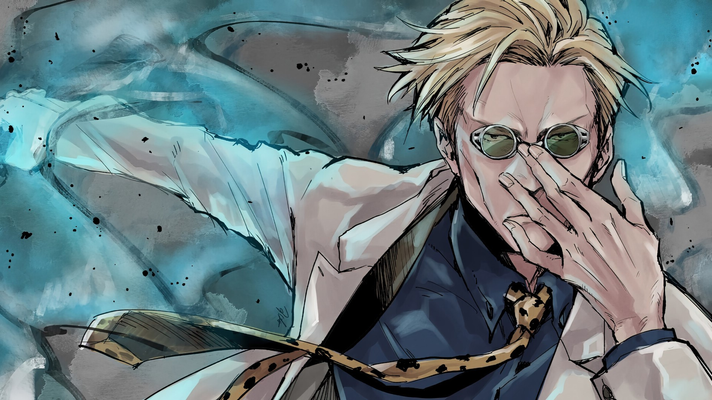
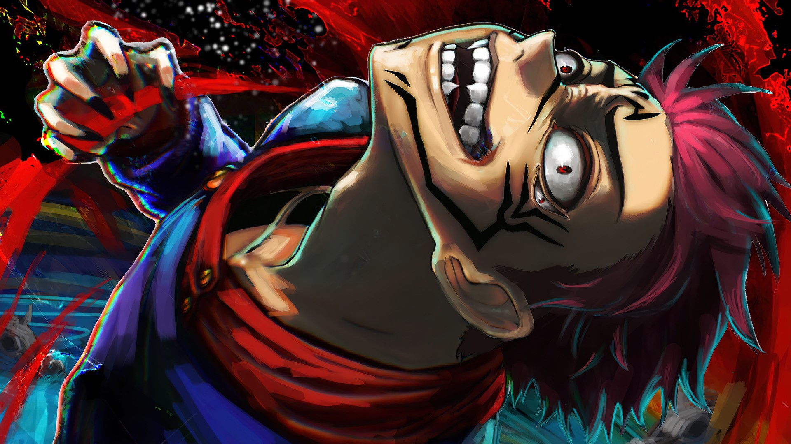
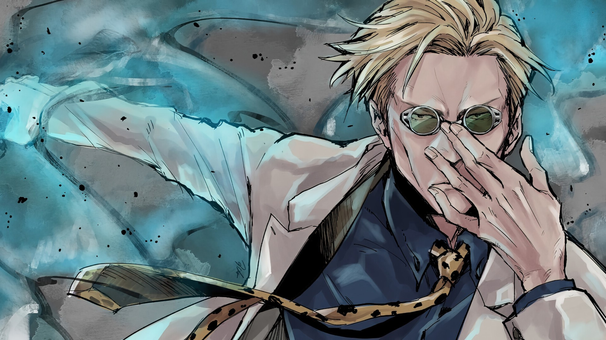
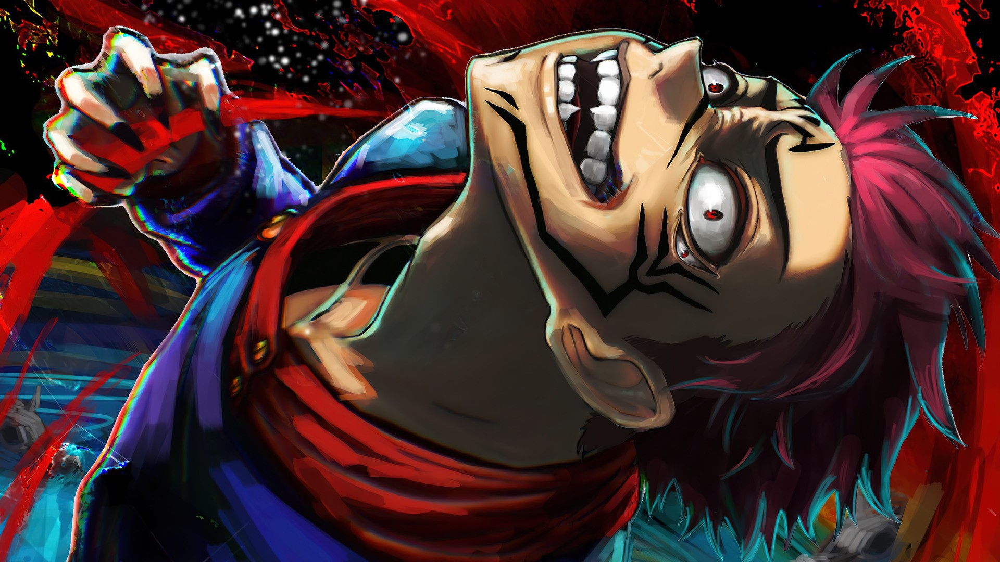

Yuji Itadori
Yuji é um adolescente musculoso com grandes olhos castanhos claros e cabelo preto e rosa espetado. Depois de comer um artefato e consequentemente se tornar um hospedeiro para Sukuna, ele recebe um segundo par de olhos que só se abrem quando Sukuna controla o corpo.
Megumi Fushiguro
Megumi Fushiguro é um feiticeiro jujutsu de nível 2 e estudante do primeiro ano na Escola de Jujutsu de Tóquio junto com Yuji Itadori e Nobara Kugisaki. Filho de Toji Fushiguro, Megumi também é um descendente do Clã Zenin. Megumi nasceu fora do clã e foi encontrado eventualmente por Satoru Gojo, que o ensinou na Escola de Jujutsu como seu aluno.
Nobara Kugisaki
Nobara Kugisaki é a tritagonista de Jujutsu Kaisen. Ela está no primeiro ano da Escola Secundária Jujutsu da Prefeitura de Tóquio estudando com Satoru Gojo ao lado de Yuji e Megumi.
Gojo Satoru
Satoru Gojo é um homem alto, muito mais alto que seus alunos, e aparentemente é considerado atraente por muitas mulheres. Ele tem cabelo branco que geralmente é espetado para cima, mas Gojo o deixa solto quando está em um traje mais casual. Gojo tem olhos azuis brilhantes, mas eles normalmente estão cobertos por sua venda preta característica ou um par de óculos escuros.
Kento Nanami
Kento Nanami é um personagem coadjuvante importante em Jujutsu Kaisen. Ele foi um ex-aluno da Tokyo Jujutsu High, onde foi aluno do primeiro ano com Satoru Gojo e Suguru Geto. Nanami inicialmente deixou a Escola Jujutsu depois de se formar para se tornar um assalariado, mas retornou quatro anos depois para continuar trabalhando como feiticeiro de jujutsu.
Maki Zenin
Maki Zenin está atualmente no segundo ano da Escola Secundária Jujutsu da Prefeitura de Tóquio. Originalmente da Família Zenin, Maki saiu sozinha devido a ser rejeitada por sua falta de Energia Amaldiçoada. Ela estuda para se tornar uma feiticeira forte, apesar de sua própria família trabalhar contra ela.
Ryomen Sukuna
Ryomen Sukuna é o mais forte feiticeiro jujutsu de mais de mil anos atrás. Considerado o Rei indiscutível das Maldições.